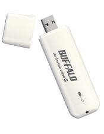

Free
computer Tutorials
|
Free
computer Tutorials
|
|
 home home |
Stay at Home and Learn | |||||
Beginners Guide to going Wireless |
||||||
|
Buffalo AirStation G54 High Power
The Buffalo AirStation G54 High Power Router is for those who have a Cable broadband connection. If you have an ADSL broadband connection, your first router is here: ADSL Wirless Routers.
Use with: Buffalo's High Power PC Card (for latptops)
Use with: Wireless-G High-Speed USB 2.0 Adapter  Review The Buffalo AirStation G54 High Power Router has been a top performer with computer magazines for some time now, and has still got what it takes when going up against more expensive kit. Set up is very easy, with the help of the wizards, and it should even detect your Cable broadband connection straight away. Singal strength is impressive with this router, due to the built-in amplifier. Plays well with most wireless adaptors, getting a signal at even 20 metres in testing conditions. If you use one of Buffalo's High Power PC Card's or High-Speed USB 2.0 Adapters (above), the signal is even better! Configuration pages are relatively simple, with an advanced section for the more adept users. Security is not switched on by default, though, and there's no prompt to use it when you're setting up. So you need to get in to the configuration pages after you've got everything up and running, and switch on WPA or WEP security. Luckily the firewall is switched on by default. This wireless router has something called AOSS (Buffallo's Airstation OneTouch Secure System). This automatically transmits wireless settings, and works well with Buffalo's own wireless adaptors, as well as Centrino laptops. |
|||||
| Positve Points | Negative points | |||||
|
|
|||||
|
Score Computer Shopper magazine score - 5 stars out of
5 All in all, a top pick! This is a good router to buy if you've ever had problems with wireless signals in the past. A recommended all-rounder, and still competes well with all the MIMO and Pre N routers currently flooding the market. Works especially well when you use one of the wirless adaptors mentioned above (Buffalo's High Power PC Card).
|
||||||
|
<<- Previous Wireless Router and Adaptor |
||||||